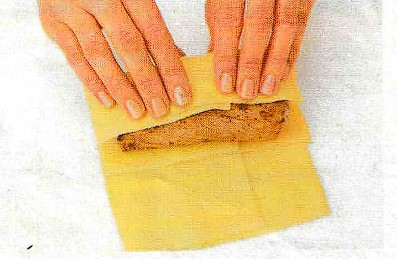
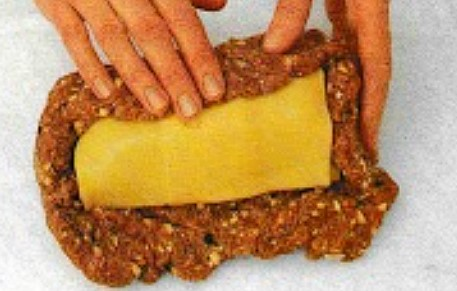
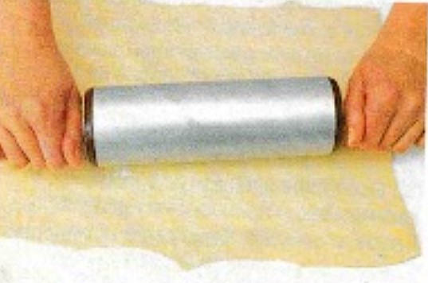
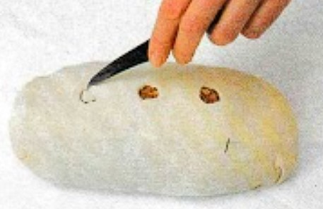
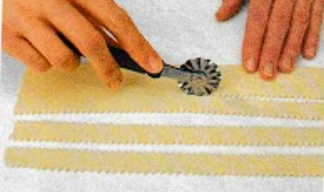

<!DOCTYPE html>
<html lang="de">
    <head>
    <meta charset="UTF-8">
    <meta name="viewport" content="width=device-width, initial-scale=1.0">
    </html>
        <style>
                @media only screen and (max-width: 915) {
                
  body {
 
  }
  
  .tex {
    text-align: left;
    background-color: #660a0a;
    width: 400%;
    position:absolute;
    top:2.5em;
    right: 80em;
}
}

body {
    width: 98%;

}


.blue{
    width: 100%;
            background-color: rgba(23, 22, 32, 0.829);
            color: rgba(178, 177, 216, 0.829);
            font-size: 16px;
            font-weight: bold;
            padding: 3px 0px;
}

 a:link, a:visited {
    width: 10%;
		  background-color: #f7f3f3;
		  color: black;
		  padding: 0.5% 2%;
		  text-align: center;
		  text-decoration: none;
		  display: inline-block;
          font-size: 100%;
		}   
a:hover, a:active {
		  background-color: #d1a138;
		}           
.t {
  width: 100%;
}
.tt{
    width: 30%;
}
.p{
    width: 60%;
}
.tex {
    text-align: left;
    background-color: #ffffff;
    width: 40%;
    position:absolute;
    top:2.5em;
    right: 8em;
}
.t3{
    font-family:Segoe UI;
    font-size: 90%;
    width: 60%;
    background-color: rgba(#ffffff);
    position: relative;
    left: 0%;
}
.t2{
    width: 80%;
    background-color: rgba(#ffffff);
    position: relative;
    left: 18%;
}

        </style>
    </head>
<body id="ds">
    <div>
    
    <br>
    </div>
    <div class="blue">   
        </div>
    
        <a href="\Bulviu patiekalai.html"> Bulvių patiekalai </a>
        <a href="\Mesos patiekalai.html"> Mėsos patiekalai </a>
   
    <div class="blue">  
         </div>  
         <div>
            <a href="Vyniotinis apvalkale.html" > Vyniotinis apvalkale</a> 
       </div>
    <div class="t2">
        <div>
        <div class="t3">
        <h1 style="background-color: #ffffff;"> Vyniotinis apvalkale</h1>
    </div>
    
        
        <div>
            <div class="tex" >
                <p>Produktai 6 porcijoms: <br>apie 250 g kiaulienos filė (nugarinės), <br>druskos, <br>šviežiai maltų pipirų,<br> 
            2 valg. š. aliejaus, <br>400 g kelių rūšių maltos mėsos, <br>100 g kapotos (arba labai stambiai maltos) 
            jautienos filė, <br>2 kiaušiniai, <br>125 g šampinjonų, <br>1 svogūno galvutė, <br>2 valg. š. maltų džiūvėsių, <br>150 g 
            fermentinio sūrio (aštresnio) riekių, <br>1 valg. š. miltų, <br>1 kiaušinio trynys.</p>
            </div>
        </div>
        <p class="p">
            1. Kiaulienos filė (nugarinę) nuplaukite ir nusausinkite, įtrinkite druska ir pipirais.<br>
            2. Keptuvėje įkaitinkite aliejų ir iš visų pusių apkepinkite kiaulienos filė.<br> 
            3. Mėsos faršą ir kapotą jautieną sumaišykite, įmuškite kiaušinius. <br>
            4. Šampinjonus nuplaukite ir nuvalykite, nulupkite svogūną, viską smulkiai supjaustykite ir suberkite į mėsą. <br>
            5. Galiausiai berkite džiūvėsius ir paskaninkite druska bei pipirais.<br>
        </p>
        <div>
        
        </div>
        <p class="p">
            6. Kiaulienos nugarinę įvyniokite į fermentinio sūrio riekes.<br>
            7. Paruoštą mėsos faršą išplokite lygiu sluoksniu, į vidurį dėkite nugarinę ir gerai apspauskite malta mėsa.<br>
        </p>
        <div>
            
        </div>
        <p class="p">
            8. Užminkykite minkštą tešlą.
            <h2>Mūsų patarimas:</h2> <p>Tešlą apvalkalui galite ruošti ir pagal savo receptą. Mes siūlome kelis tešlos variantus: <br>
            I. 1 kiaušinis, 200 g miltų, žiupsnelis druskos, apie 120 g vandens ( tešla turi lengvai kočiotis).<br> 
            II. 2 kiaušinių tryniai, 250 g miltų, žiupsnelis druskos, 3 valg. š. vandens, 100 g lydyto sviesto.<br><br>
            9. Tešlos rutulį susukite į foliją arba polietileno maišelį ir apie 30 min. laikykite šaldytuve.<br></p>
            </p>
        <div>
            
        </div>
        <p class="p">
            10. Tada iškočiokite tokio dydžio lakštą, kad galėtumėte apgaubti paruoštą mėsos vyniotinį.<br> 
            Truputį iškočiotos tešlos palikite juostelėms kepiniui puošti. <br><br>
            11. Į tešlą įvyniokite mėsą, tešlos sujungimo vietas ištepkite kiaušinio baltymu, gerai suspauskite.<br>
        </p>
        <div>
            >
        </div>
        <p class="p">
            12. Viršuje išpjaukite tris skylutes kepimo metu susidariusiems garams išeiti.<br>
            13. Iš paliktos tešlos rateliu išpjaukite siauras juosteles.<br>
        </p>
        <div>
            >
        </div>
        <p class="p">
            14. Kiaušinio baltymu ištepę tešlos paviršių, apsukite vyniotinį.<br>
            15. Vyniotinį apie 20 min. palaikykite šaltai, tada patepkite plaktu kiaušinio tryniu ir kepkite 1 val. <br>
            200° C temperatūros (Ill padala) orkaitėje.<br>
        </p>
        <p class="p">
            Prie šio patiekalo labai tiks svieste troškinti porai arba jauni svogūnai.
        </p>
        <h3 class="p">
            1 porcijos energetinė vertė: 37 g baltymų, 45 g riebalų, 25 g angliavandenių = 2930 kJ = 700 kcal.
        </h3>
   </div>
</div>
<div class="blue">   
    </div>
    <div>
        <a href="#"> --- Į pradžia </a>
    </div>
</div>
</body>
</html>